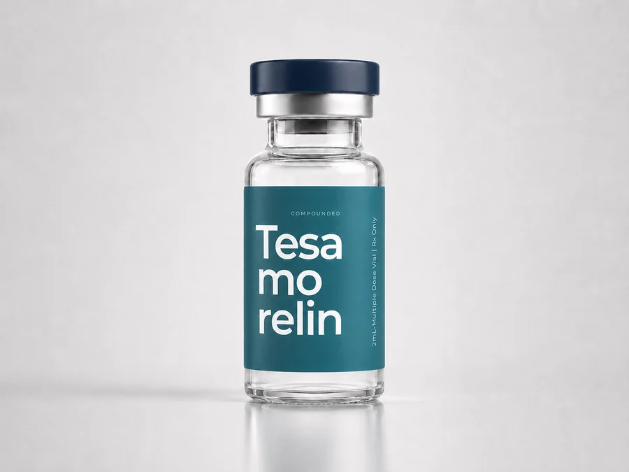
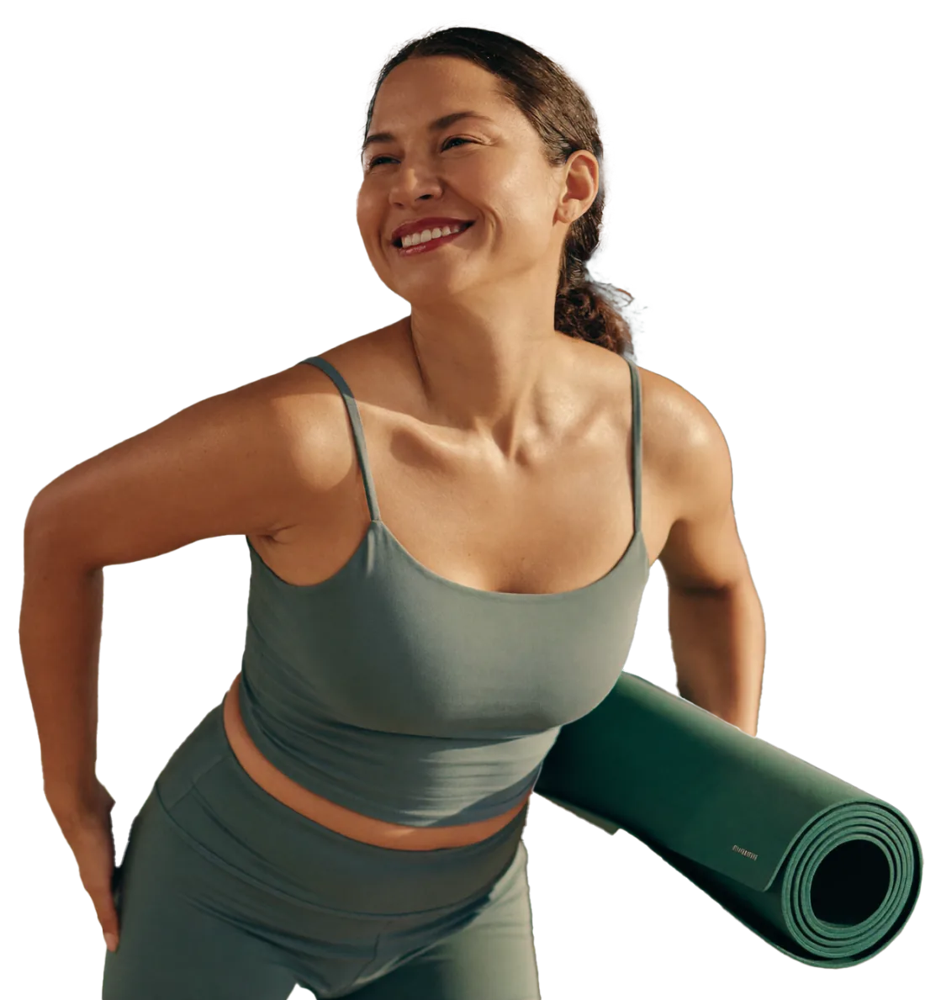

Add Tesamorelin To Your Cart
You’ve already taken the first step. Now, boost your journey with Tesamorelin for just [PRICE].
Continue Without Adding
What Is Tesamorelin?
Tesamorelin is a peptide therapy that may be recommended for individuals looking for additional support with body composition, metabolic health, and wellness optimization.

Why Add Tesamorelin?
Tesamorelin may help support:
Body composition goals
Metabolic wellness
Healthy aging
Fitness and lifestyle progress
A more comprehensive wellness plan
Continued momentum beyond weight loss alone
Ready To Add Tesamorelin?
Now, boost your journey with Tesamorelin for just [PRICE].
A More Personalized Approach
Your health journey is not one-size-fits-all.
Adding Tesamorelin may help support a more complete approach to your goals, especially if you are focused on long-term progress, wellness, and how your body changes over time.
Like every part of your Chime experience, this option is guided with provider oversight and designed around your individual needs.
Provider oversightThe Chime Experience
“Everything was clearly explained from the start. I always knew what the next step was.”
 — Sarah K., Columbus, OH
— Sarah K., Columbus, OH
“The check-ins made it feel like a real plan, not just a purchase.”
 — Mark D., Madison, WI
— Mark D., Madison, WI
“Getting set up took minutes, and I never felt rushed into anything.”
 — Emily R., Des Moines, IA
— Emily R., Des Moines, IA